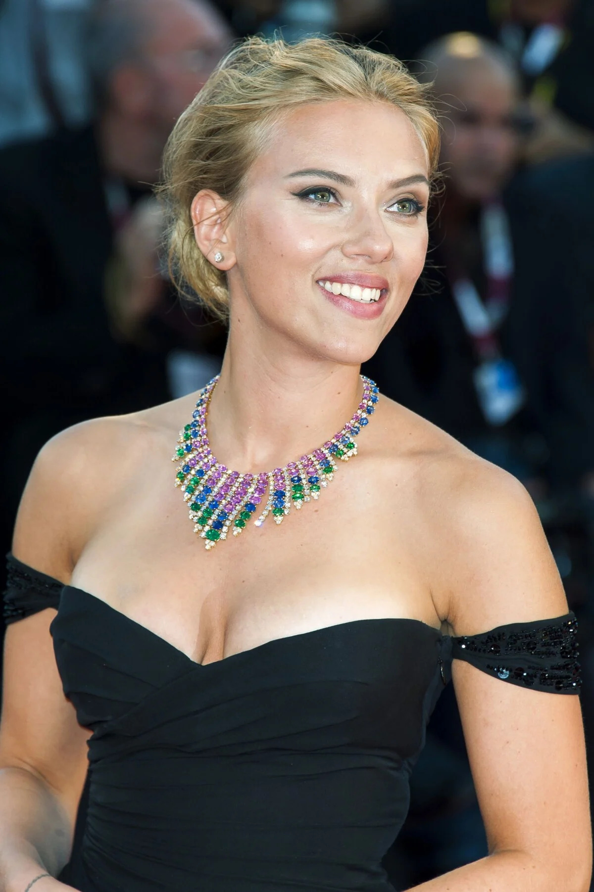

|
Scarlett Johansson est une actrice, réalisatrice, scénariste, productrice de cinéma
et chanteuse américano-danoise. Elle est née le 22 novembre 1984 à Manhattan(New York)
depuis l'âge de 14 ans notamment avec sa prestation dans "L'Homme qui murmurait à
l'oreille des cheveux. Elle détient beaucoup de rôles principaux acclamés par la
critique : "Ghost World" , "Lost in translation" et "La jeune Fille à la perle".
Elle réalise tout type de films, comédie dramatique, comédie romantique
"Ce que pensent les hommes" mais aussi dans les thrillers. |  |